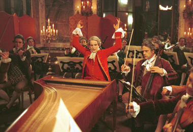

AMADEUS MOZART |
Wolfgang Amadeus Mozart - povestea unui geniu |
|
|
 În scurta sa viaţă, Wolfgang Amadeus Mozart a compus un număr enorm de opere muzicale, cele mai multe neegalate în frumuseţe sau profunzime. În 1862 Ludwig von Köchel a clasificat şi catalogat compoziţiile lui Mozart, fiind numerotate cu menţiunea KV (Köchel-Verzeichnis = catalogul Köchel). Ultima sa creaţie, Requiem-ul, are numărul 626. Mozart a fost autorul a 41 de simfonii, printre care sunt de menţionat Simfonia nr. 35 Haffner, nr. 36 Linz, nr. 40 şi nr. 41 Jupiter. A compus 27 concerte pentru pian şi orchestră, 7 concerte pentru vioară şi orchestră, concerte pentru clarinet, pentru harpă şi flaut, pentru corn şi orchestră, 2 simfonii concertante, divertismente, serenade. În domeniul muzicii de cameră sunt de menţionat cele 6 cvartete pentru coarde dedicate lui Haydn, sonate pentru pian, sonate pentru vioară şi pian, trios pentru vioară, violoncel şi pian, cvartete pentru instrumente de suflat, sextetul O glumă muzicală etc. Pasionat de operă, a compus 17 opere, dintre care cele mai cunoscute, jucate şi astăzi pe scenele tuturor teatrelor de operă din lume, sunt: Răpirea din Serai, Nunta lui Figaro, Don Giovanni, Cosi fan tutte, Flautul fermecat. A mai compus 19 messe, cantate, motette pentru soprană şi orchestră, oratoriul "Die Schuldigkeit des ersten Gebots" şi, în fine, "Requiem"-ul în re minor. Chiar daca si inainte de 1776 putea sa alcatuiasca o lista impresionanta de operele, simfoniile, concertele si piesele de camera ale sale, capodoperele rasunatoare le-a compus dupa turneul de la Paris.In anul 1779 a terminat marea Simfonie concertanta pentru vioara, viola si orchestra.Dupa aceasta a primit o alta comanda pentru compunerea unei “Opera Seria” de la Teatrul Curtii din Munchen.Atunci a fost creat Idomeneo (1781) pe care l-a compus pe baza libretului abatelui Veresco.A avut un success rasunator, datorat spiritului nou cu care se apropia de traditiile vechi ale operei. Prima lui opera scrisa la Viena, Rapirea din serai, a avut un success rasunator in 1782. In Nunta lui Figaro (opera comica-1786) se oglindeste stilul vioi si brilliant ai lui Mozart.Premiera a fost un success urias si in scurta vreme compozitorul a primit de la Praga o comanda pentru a compune o noua opera.De data aceasta a pus pe note povestea lui Don Giovanni (1787).Chiar daca piesa contine o multitudine de parti comice, scenele seriose dovedesc o forta dramatica cum nu a mai existat anterior. In 1790 a terminat o noua mare opera, Cosifan tutte (cuvant cu cuvant: Toate fac asa), o poveste cinica, aproape de necrezut despre nestatornicia feminine.Opera aceasta a fost urmata de opera comica Flautul fermecat (1791) un singpiel (opera germana), care prezinta lupta dintre bine si rau ilustrata intr-un mod simplist, parca pentru omul obisnuit.
Panait Claudia Alexandra
|